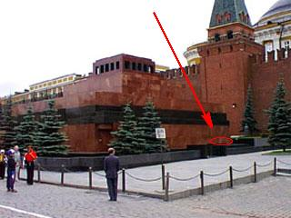

Надпись на плите Мавзолея.
На одной из плит мавзолея Ленина в Москве есть совершенно удивительная
надпись - "Niatomiyoteotl, in tlahtoani. Nehuatl nirusitlalpantecuhtli.
Axcan nitechitoa". Найти ее нетрудно. На правой стороне сооружения, что подходит
прямо к кремлевской стене, на самой нижней, дальней плите выбиты эти буквы.
Причина их возникновения столь зловещая, что всякий раз я мысленно
содрогаюсь, когда вспоминаю свое расследование. История эта началась более
двадцати лет назад и закончилась лишь недавно, вскрыв чудовищные пласты
человеческих злодеяний и низменных страстей. Но давайте по-порядку.
Первого мая 1988 года на Красной Площади, у кремлевской стены был
произведен последний массовый расстрел инакомыслящих. Такие публичные
казни были нормой в Советской России, начиная с 1924 года. Расстрелы как
правило бывали приурочены к праздникам и проходили при большом
скоплении народа, в том числе, детей. Вот и в этот раз, лишь только стихли
автоматные очереди, праздничные колонны русских начали первомайскую демонстрацию.
Нарядно одетые люди шагали в ногу и пели гимны своим святым - Ленину,
Сталину и Коммунистической Партии.
Сказать, что я был шокирован - значит ничего не сказать, особенно,
учитывая то, что я посещал СССР в составе правозащитной делегации.
Целью поездки была помощь в проведении демократических реформ по западному
образцу и обеспечение развития свободы слова.
В глубокой задумчивости я прогуливался по Красной площади под вечер. С
брусчатки смыли уже кровь, ветер разносил увядшие лепестки цветов и обрывки
воздушных шариков. Вот тогда-то я и увидел эту зловещую надпись:
"Niatomiyoteotl, in tlahtoani. Nehuatl nirusitlalpantecuhtli.
Axcan nitechitoa". Будучи не в состоянии понять смысл, я тщательно
скопировал ее в свою записную книжку, а заодно и сделал фото.
Фотографировать у мавзолея запрещено, но я справедливо решил, что человеку с
американским паспортом позволено иногда поступать по своему усмотрению, даже
если он находится в такой стране, как Коммунистическая Россия.
Вернувшись в США, я попросил своих друзей, советских эмигрантов, перевести
эту надпись. Каково же было мое удивление, когда я узнал, что она сделана не
по-русски, а каком-то другом языке! Один из друзей предположил, что это -
итальянский. Вскоре выяснилось, что и итальянцы этот язык впервые
видят. Однако они решили, что это может быть исландский язык, исходя
из того, что некоторые слова - очень длинные. Но и здесь меня поджидало
разочарование. Единственный в Нью-Йорке носитель исландского языка только
пожал плечами и предположил, что надпись по-просту шифровка. А учитывая ее
коммунистическое происхождение, он в этом и вообще не
сомневается. Русские же слова, по его мнению, обычно по длине превосходят
исландские, например (тут он поглядел в книги) "Укрспецлифтремонтмонтаж".
Одним словом, расследование зашло в тупик в самом начале.
Продолжение же случилось спустя долгие восемнадцать лет.
Шел 2006 год, отгремела Оранжевая Революция в Киеве и вообще, события
развивались с быстротой торнадо, где-нибудь в Южной Дакоте. Страны постсоветского
пространства одна за другой выбрали свободу от путинской России.
В те дни я, как консультант российской оппозиции по вопросам демократии и
прав человека, посещал кафедру исторических наук в одном из престижных университетов
Денвера (Колорадо). Шла важная и кропотливая работа. Требовалось максимально
сфальсифицировать роль Сталина в истории, чтобы помочь развитию демократических и
антисоветских тенденций в странах бывшего СССР и восточного блока. Особый упор
делался на разъяснительную работу в Польше, Украине, Грузии и Прибалтике.
Немало пришлось общаться мне с профессором Жаком Монро, автором знаменитых на весь
мир монографий "Основы правозащитного движения в России" и "Место
коммунизма - на свалке истории".
В один из дней мы вышли на перекур. Я внезапно вспомнил про странную
надпись и рассказал профессору об этой загадке.
- Я думаю, надо искать в языках индейцев центральной Америки - сказал он,
ни секунды не раздумывая.
- Почему?
- А вы разве не замечали, что Мавзолей на Красной Площади внешне ничем не
отличается от пирамид Майя? Это же классическая теокалли, храм для человеческих
жертвоприношений. Надпись можете показать?
- Вот пожалуйста, - ответил я, радуясь своей привычке никогда не
расставаться со старыми записями.
- Так и есть! - воскликнул он, - Это науатль, язык ацтеков. Идемте со
мной.
Кафедра иностранных языков оказалась в соседнем здании, и уже через
полчаса я держал в руках расшифровку таинственной надписи: "Я
лысый бог, повелитель и властелин России. Теперь я повелеваю вам."
- Но кто такой "лысый бог"? - изумился я, - И что он повелевает?
- В данном случае, мне почти все ясно. - ответил профессор. - Давайте
сядем вот, на скамеечку, я сейчас объясню.
То, что он рассказал мне, перевернуло все мои представления об истории
русского коммунизма, хотя я всегда считал себя знатоком данного вопроса.
История эта началась незадолго до большевицкого путча 1917 года.
Как оно всегда бывает в России, у тогдашней оппозиции, партии
большевиков, не было ни голосов в Думе ни денег на нужды революции. И
поэтому их лидеры Ленин и Троцкий отправились на запад в поисках средств.
Как сказал бы Путин, "шакалить". Ленин поехал в Германию, с которой
тогдашняя Россия находилась в состоянии войны. Он справедливо рассудил, что
сможет взять необходимый денежный кредит под обещание отдать немцам западные
территории. (Так он в последствии и сделал) Троцкий отправился в США с
обещанием в случае успеха революции отдать Америке богатый ресурсами Дальний Восток.
Ленину тогда удалось договориться с немецким правительством. Троцкий же
успеха не добился. ("К сожалению не добился. - подчеркнул профессор Монро. - Если
бы Америка тогда взялась за раздел России, этого не пришлось бы делать
сейчас. Никто ведь не знал, что Ленин так быстро протянет ноги")
Однако, Троцкий не унывает и отправляется в соседнюю Мексику, где входит
в контакт с представителями секты бога Атомьотеотля, имя которого
переводится как "Лысый Бог". Культ Атомьотеотля в средневековой Мексике
отличался такой жестокостью, что был запрещен еще в 13-м веке и ушел в
глубокое подполье. Согласно представлениям ацтеков, этот бог был лыс и являлся
покровителем народных восстаний. Лев Троцкий хорошо понимал, что захватить
власть в России - это только полдела. Нужно ее еще и удержать. Для этого
потребуется религия - новая, яркая и жестокая. Культ "Лысого Бога" как раз
подходил для этих целей. А главным ее ритуалом были массовые человеческие
жертвоприношения.
Троцкий тогда договорился с жрецами секты, что Ленин будет представлен как
живое воплощение Атомьотеотля. А представители руководства секты смогут получать
определенные материальные средства из Советской России.
Сказано - сделано. Троцкий возвращается в Россию, имея при себе новую
идеологию для молодого рабоче-крестьянского государства. Через несколько лет
после революции Ленин умирает. Вслед за этим, по приказу Троцкого возводится
первый временный мавзолей в виде ацтекской пирамиды - теокалли. Вскоре строится
второй, по сходному проекту. Тогда же начинаются и первые человеческие
жертвоприношения. Однако, уже тогда наметились разногласия Троцкого со
Сталиным. Первый считал, что жертвоприношение должно быть представлено
эстетически. Жертву украшали цветами и пели гимны. Сталин решил, что важна
не красота а массовость. И по его приказу, у кремлевской стены начали
групповые расстрелы диссидентов по праздникам. Конечно, это было не единственное
разногласие, и в конце концов, Троцкому пришлось вернуться в Мексику
практически ни с чем. Обещание, данное жрецам, он выполнить не смог. В
Москве достраивался третий, современный вариант ступенчатой пирамиды,
посвященной жестокому "Лысому Богу". Уже готовы и плиты, с высеченными на
них повелениями "великого тлатоани" Атомьотеотля своим подданным. Однако по
приказу Сталина, плиты эти в срочном порядке отшлифовали с обратной стороны и
установили этой гладкой стороной наружу. И только с одной плитой что-то случилось
не так. Вероятно, она была бракованной и отшлифовать другую сторону не смогли.
Поэтому ее установили "как есть", с фрагментом надписи. При этом ее спрятали
подальше от людских глаз на дальней стене. Так и возникла эта загадочная
надпись на ацтекском языке.
Тем временем дела Троцкого в Мексике шли все хуже. К руководству сектой
пришел молодой и амбициозный жрец Истакойотль, "Белый Шакал". В один из дней
он явился к Троцкому с ледорубом за пазухой. "О Атомьотеотль! Прими же в жертву
презренного раба Льва Троцкого!" - воскликнул жрец и обрушил ледоруб на голову
идеолога пролетарской революции.
Ну что ж. Рассказывать осталось немного. Что за веления предполагалось
высечь на стене Мавзолея мы до сих пор не знаем. Скорее всего это обычный
список "Заветов Ильича", который в России известен даже дошкольникам. В
сущности, это цитаты из различных статей Ленина - "Очередные задачи
советской власти", "Малая земля", "Что такое друзья народа" и пр.
Истакойотль, более известный под псевдонимом Рамон Меркадер умер в 1978
году в звании Героя Советского Союза. А спустя менее, чем десять лет
человеческие жертвоприношения у Мавзолея прекратились.
(с) 2012 "Интеллидженс Инсайд". Винсборо, США.
*** JES 2012 *** Юрий Шимановский
http://shymanovsky.mooo.com
Назад|На главную